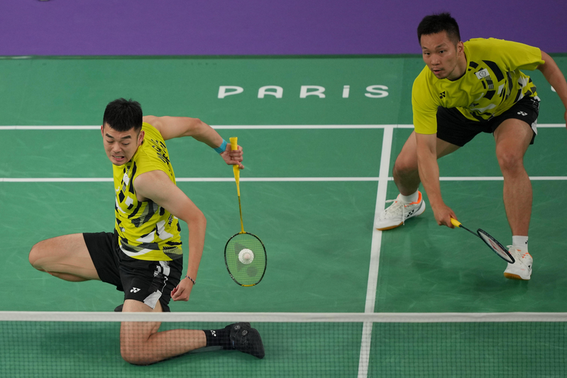

中华队羽球黄金男双李洋／王齐麟在巴黎奥运男双金牌战打败中国选手梁伟铿／王昶成功摘金，尽管有中国网友酸溜溜地说，「中国队又一金一银入帐」，但也有人兴奋地表示：「支持羚羊组合，你们太棒了！打脸了那些人。」
这场赛事央视虽然未全程转播，但依然有不少中国民众关注。值得注意的是，中国官媒完全没有刊登麟洋组合拿金牌、站上金牌领奖台的照片，只注销中国队梁王拿银牌的领奖照。
中国网友留言：「恭贺中华台北队斩获巴黎奥运羽球男双金牌！ 同时也恭贺中国队取得银牌！」「李洋王齐麟上届奥运男双冠军，实力一直都有，梁王年纪小下届冠军也不迟。」
对于中国官媒全网，都用「惜败」形容中国队拿到银牌。网友说：「这下好了，全网炒作的松弛感！」「很多报导就说很遗憾拿了银牌，甚至绝口不提谁获得金牌。没看直播的都无从知道」。
对于央视未全场转播，只转播了40分钟，中国网友称：「电视节目都剪了，可恨不？自己人的比赛都禁，可以想像，有多少东西藏着不让人知道？ ！」
还有中国网友对麟洋最后站上冠军领奖台，两人在唱《国旗歌》时落泪而感动。 「一起看台北升旗，不是他们我都不知道台北会放什么歌，原来《国旗歌》还蛮好听的！」
但也有网友批评中国队王梁组合，「不知道这个世界排名第一如何来的？全程都在追分，被牵制，实力明显低于对手！这在国球羽毛球上，是一种耻辱！」不过也有网友说：「年纪还小，有的是机会！虽败犹荣。」
巴黎奥运热话题麟洋配赛后大合照 李洋「1句话」逗笑马来西亚选手与约克维奇打到抢7落败 阿尔卡拉斯：我有过机会30岁生日礼物 中国刘洋夺金 想吃三鲜馅饺子中国混泳接力夺金 英国蛙王：对药检制度没信心选手村太热没冷气...

李洋与王齐麟在金牌争夺战拚尽全力，中国网友也赞：「你们太棒了！」（美联社）
中华队羽球黄金男双李洋／王齐麟在巴黎奥运男双金牌战打败中国选手梁伟铿／王昶成功摘金，尽管有中国网友酸溜溜地说，「中国队又一金一银入帐」，但也有人兴奋地表示：「支持羚羊组合，你们太棒了！打脸了那些人。」
这场赛事央视虽然未全程转播，但依然有不少中国民众关注。值得注意的是，中国官媒完全没有刊登麟洋组合拿金牌、站上金牌领奖台的照片，只注销中国队梁王拿银牌的领奖照。
中国网友留言：「恭贺中华台北队斩获巴黎奥运羽球男双金牌！ 同时也恭贺中国队取得银牌！」「李洋王齐麟上届奥运男双冠军，实力一直都有，梁王年纪小下届冠军也不迟。」
对于中国官媒全网，都用「惜败」形容中国队拿到银牌。网友说：「这下好了，全网炒作的松弛感！」「很多报导就说很遗憾拿了银牌，甚至绝口不提谁获得金牌。没看直播的都无从知道」。
对于央视未全场转播，只转播了40分钟，中国网友称：「电视节目都剪了，可恨不？自己人的比赛都禁，可以想像，有多少东西藏着不让人知道？ ！」
还有中国网友对麟洋最后站上冠军领奖台，两人在唱《国旗歌》时落泪而感动。 「一起看台北升旗，不是他们我都不知道台北会放什么歌，原来《国旗歌》还蛮好听的！」
但也有网友批评中国队王梁组合，「不知道这个世界排名第一如何来的？全程都在追分，被牵制，实力明显低于对手！这在国球羽毛球上，是一种耻辱！」不过也有网友说：「年纪还小，有的是机会！虽败犹荣。」
巴黎奥运热话题
- 麟洋配赛后大合照 李洋「1句话」逗笑马来西亚选手
- 与约克维奇打到抢7落败 阿尔卡拉斯：我有过机会
- 30岁生日礼物 中国刘洋夺金 想吃三鲜馅饺子
- 中国混泳接力夺金 英国蛙王：对药检制度没信心
- 选手村太热没冷气 意大利金牌索性去公园睡觉